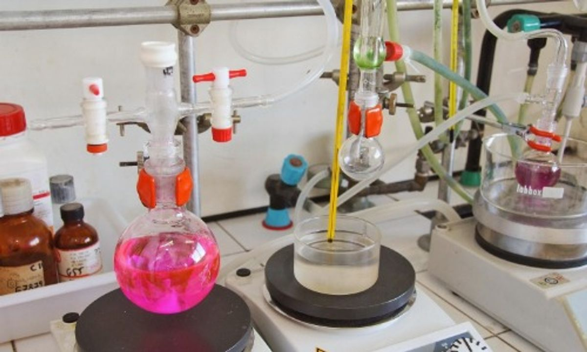

Mastering Alkanes: Methods of Preparation and Key Properties
Category: Organic Chemistry
Introduction to Alkanes
Alkanes are saturated hydrocarbons containing only single carbon-carbon and carbon-hydrogen bonds, following the general formula CnH2n+2. Often referred to as paraffins due to their relative chemical inertness, they form the foundation of organic chemistry and petroleum-based fuels.
Methods of Preparation

Chemists synthesize alkanes through several key laboratory and industrial methods:
- Hydrogenation of Alkenes and Alkynes: Unsaturated hydrocarbons react with hydrogen gas in the presence of a metal catalyst (such as Platinum, Palladium, or Nickel) to yield alkanes.
- Wurtz Reaction: Alkyl halides react with sodium metal in dry ether to form higher symmetrical alkanes with double the carbon atoms.
- Decarboxylation of Carboxylic Acids: Heating sodium salts of carboxylic acids with soda lime (a mixture of sodium hydroxide and calcium oxide) eliminates carbon dioxide, producing an alkane.
Properties of Alkanes
The behavior of alkanes is defined by their non-polar nature and strong sigma bonds:
Physical Properties
- Solubility: They are non-polar molecules, meaning they are insoluble in polar solvents like water but dissolve well in non-polar organic solvents.
- Boiling Point: Boiling points increase with molecular weight due to stronger van der Waals forces, while branched-chain isomers have lower boiling points due to decreased surface area.
Chemical Properties
- Combustion: Alkanes burn in the presence of oxygen to release large amounts of heat, producing carbon dioxide and water.
- Substitution Reactions: In the presence of sunlight or UV light, alkanes undergo free-radical halogenation, where hydrogen atoms are successively replaced by halogen atoms (like chlorine or bromine).
Conclusion
While alkanes might initially seem unreactive, understanding their synthesis routes and fundamental properties is crucial for navigating more advanced organic reactions and industrial petrochemical processes.